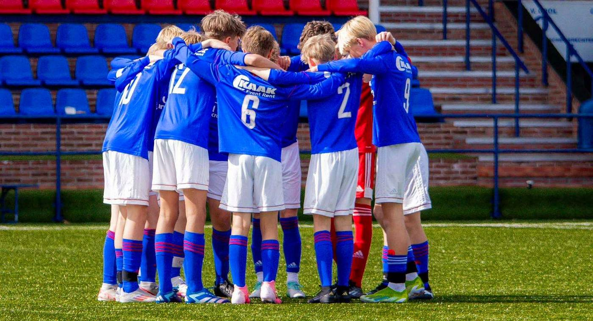
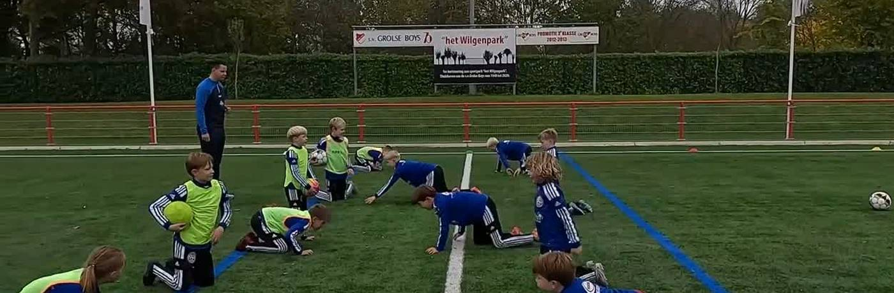
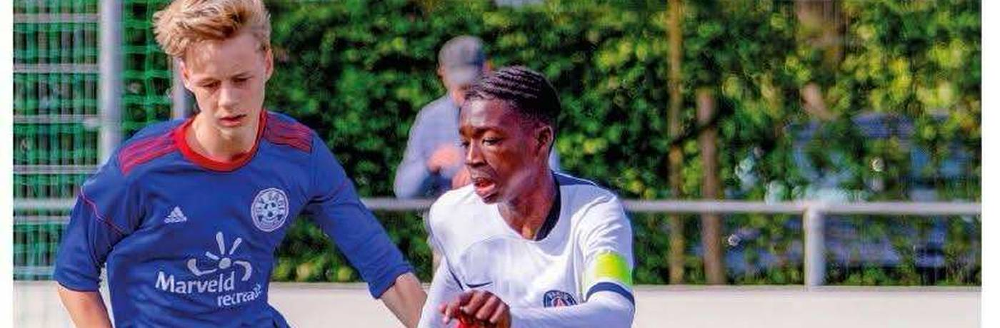
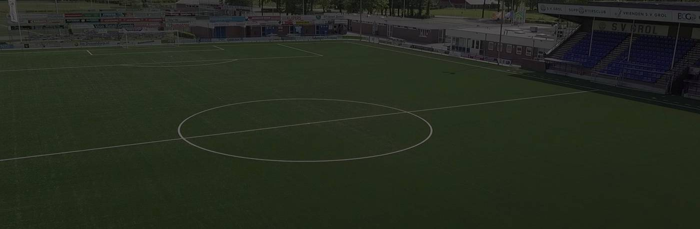
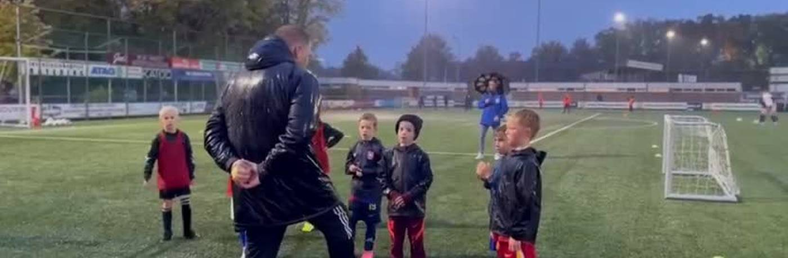
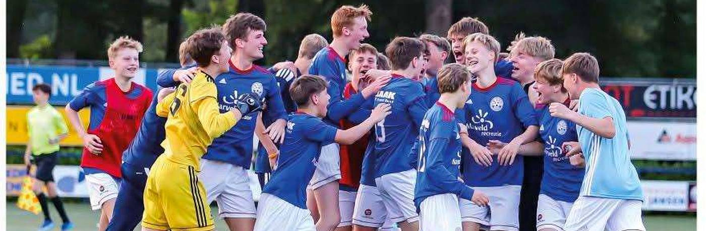
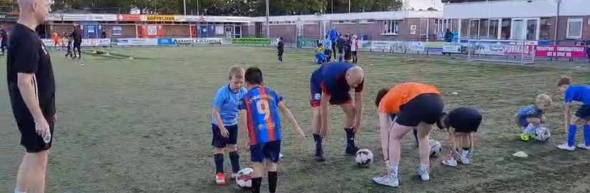

Grol Kompas
Wegwijzer voor de jeugdopleiding van s.v. Grol
Het Grol Kompas wijst trainers, leiders, spelers en ouders de weg binnen de jeugdopleiding: voetbalbeleid, omgangsbeleid en beoordeling. Kies hieronder waar je naartoe wilt, of gebruik de zoekfunctie ( rechtsboven).
Voetbalinhoud
Cultuur & begeleiding
Praktisch
startchecklist Praktisch & contact Organisatie & rollen Wie traint welk team Jaarkalender Bibliotheek Spelers & ouders
Snel op weg als trainer of leider
- Nieuw bij Grol? Begin bij Nieuw hier? Start hier — checklist en ouderbijeenkomst op een rij.
- Training voorbereiden? Ga naar Mijn team voor jouw leeftijdsgroep en Training geven voor de opbouw.
- Wedstrijddag? Bekijk de spelprincipes van jouw leeftijd en de afspraken rond scheidsrechters, formulier en afgelastingen.
- Vraag of probleem? Kijk bij wie bel ik waarvoor of bij Organisatie & rollen.
Over deze app
Feedback of correctie doorgeven
Tip: open het Kompas op je telefoon en kies ‘Toevoegen aan beginscherm’. Dan werkt hij ook zonder internet op het sportpark.

Mijn team
De visie van jouw leeftijdsgroep, op één plek
Kies jouw leeftijdsgroep. Je ziet dan de visie voor die leeftijd (techniek, tactiek, mentaal, fysiek), de geldende spelprincipes en de bijbehorende visiekaart om te bewaren of printen.

De 14 spelprincipes van Grol
Houvast voor spelers, eenvoud voor de coach
Waarom spelprincipes?
- Gemakkelijk te onthouden — duidelijke, terugkerende afspraken geven spelers houvast in elke situatie.
- Toepasbaar tegen elke tegenstander — afspraken blijven duidelijk, ook als de wedstrijd verandert.
- Makkelijker variëren met formaties — de afspraken blijven grotendeels gelijk, ongeacht het systeem.
- Beter trainbaar — principes zijn te oefenen in vrijwel elke wedstrijdechte (kleine) partijvorm.
- Eenvoudiger coachen — met één korte term begrijpen spelers direct wat er gevraagd wordt.
- Continuïteit — spelers ontwikkelen zich op de lange termijn, het hele seizoen door.
Per leeftijdsgroep komen er principes bij: van 3 principes bij O7 tot alle 14 vanaf O17. Zie Mijn team voor jouw leeftijd.
Aanvallen
Omschakelen aanvallen → verdedigen
Verdedigen
Omschakelen verdedigen → aanvallen

Speelwijze Grol
Aanvallend · verzorgd · creatief · dominant
Onze speelstijl
Speelstijl = de manier van spelen in grote lijnen: wat willen we zien als een team van s.v. Grol voetbalt?
- Aanvallend en naar voren gericht — continu kansen creëren, met energie en initiatief.
- Hoge intensiteit en verzorgd positiespel — snel en intens spel, dat toch tactisch georganiseerd en gecontroleerd is.
- Combinatiespel en creativiteit — doelgericht samenspelen mét ruimte voor creatieve oplossingen.
- Passie en plezier — enthousiasme en betrokkenheid staan centraal, bij spelers én trainers.
- Dominant — na balverlies de bal zo snel en zo hoog mogelijk op het veld terugveroveren.
Speelwijze = alle afspraken die een team maakt over aanvallen, verdedigen en omschakelen (de 4 teamfuncties), in relatie tot de spelbedoeling. De 14 spelprincipes vormen hiervoor de kapstok.
Zo maak je de speelwijze trainbaar
- Trainingsvormen vanuit een formatie (opstelling)
- Uitvoering van voetbalhandelingen centraal stellen
- Leersituaties creëren met herkenbaarheid en voorspelbaarheid
- Spelprincipes zien en benoemen tijdens de training
- Gebruik je speelwijze als basis voor de wedstrijdbespreking én de ouderbijeenkomst
Tips om verder te lezen: KNVB Rinus (online assistent-trainer), Trainerssite.nl, De VoetbalTrainer, en het boek ‘De Trainer Maakt Het Verschil’ (Mauro van de Looij).
Het veld: 1-4-3-3
Tik op een positie voor de gewenste kwaliteiten.
Voetbalkwaliteiten per positie (1-4-3-3)
Voor alle posities
- Voetbalintelligentie — juiste keuzes onder hoge druk
- Technisch vaardig — kunnen handelen in kleine ruimtes
- Conditioneel sterk — hoge intensiteit en herstelvermogen
- Tactisch bewustzijn — positiespel en afstemming tussen linies
- Dominantie in houding — lef, initiatief, geen angst voor risico

Training geven
Voetballen leer je door te voetballen
Waaraan voldoet een goede voetbaltraining?
- Bereid de training voor — wat wil je trainen, waar coach je op? Pak 1–2 momenten eruit. Opbouw: warming-up → vorm 1 (met variaties) → vorm 2 (met variaties) → partijspel.
- Zorg dat elke speler gezien is — vraag hoe het is, maak een praatje. Een box voor en/of na de training zorgt voor verbinding.
- Maak vooraf afspraken — wat verwacht je van de spelers? Kom hier tijdens de training op terug. Doen wat je zegt is key!
- Korte uitleg — plaatje / praatje / daadje, klassikaal of individueel.
- Veel herhaling — hoge beweegtijd, meerdere situaties uitzetten, veel balcontacten per minuut, veel scoren.
- Veel variatie — prikkel het brein: pas taak, omgeving, materiaal of persoon aan. Heeft elke speler genoeg uitdaging?
- Wedstrijdechte vormen — bouw weerstand in, maak er een competitievorm van (winnen/verliezen = fun!).
- Wees betrokken en enthousiast — geef veel complimenten, laat spelers goede voorbeelden voordoen, laat ze zelf ontdekken en stel vragen zonder zelf het antwoord te geven.
Opbouw van een Grol-training
| Duur | Onderdeel | Doel & inhoud |
|---|---|---|
| 5 min | Voorbespreking | Contact maken, terugblik, doel van de training benoemen. Maar 75 minuten? Doe dit vooraf. |
| 10–20 min | Opstartvorm | Warm worden, blessurepreventie, motorisch ontwikkelen, technische vormen, pass/trap (SV Grol warming-up). |
| 15–30 min | Oefenfase | Vereenvoudigde voetbalsituatie rond het trainingsdoel (wie/wat/waarom). Duidelijke stopmomenten: praatje/plaatje/daadje. |
| 20–30 min | Leerfase | Complexere uitvoering op hoge intensiteit. Bedenk vooraf hoe je het makkelijker/moeilijker maakt. |
| 20–30 min | Partij | Toepassen op hoogste intensiteit, met aandacht voor het voetbalprobleem. Laat de teugels niet vieren! |
| na afloop | Afsluiten | Terugkijken, beleving peilen, complimenten en verbeterpunten laten benoemen, samen opruimen en het veld af. |
Veelzijdig Leren Voetballen (onderbouw)
Wat: spelers leren door veel te bewegen, herhalen, variëren en zelf oplossingen te vinden. Zo ontwikkelen zij zich tot wendbare, vaardige en zelfverzekerde voetballers met een brede motorische basis.
De vijf pijlers
- Veel bewegen en herhalen — hoge beweegtijd, veel balcontacten, afwisselende intensieve vormen.
- Leren door zelf te ontdekken — ruimte voor keuzes, vragen stellen, fouten maken mag, verantwoordelijkheid geven.
- Aansluiten bij het kind — belevingswereld en niveau, veilige positieve leeromgeving, elk kind wordt gezien.
- Plezier en motivatie centraal — energie, beleving en succesmomenten; intrinsieke motivatie via autonomie, relatie en competentie.
- Variatie en uitdaging — variëren in taak, omgeving en materiaal (variatiedriehoek / constraints-led approach).

Omgang & cultuur
Zo gaan we met elkaar om, op en naast het veld
Hoe we binnen s.v. Grol respectvol en constructief met elkaar omgaan — op en naast het veld.
De vijf kernwaarden
- Respect — eerlijk en vriendelijk naar teamgenoten, hard maar netjes tegen tegenstanders, beslissingen van de scheidsrechter accepteren, zuinig op materialen en kleedkamers.
- Inzet en discipline — op tijd komen, actief meedoen, afspraken nakomen en op tijd melden als iets niet lukt.
- Samenwerken als team — successen samen vieren, elkaar positief coachen, openstaan voor tips, meedoen aan teamactiviteiten.
- Plezier — voetballen moet leuk blijven; lach samen, maar maak niemand belachelijk.
- Prestatie — trainen met focus en energie, willen winnen maar altijd eerlijk, verantwoordelijkheid nemen voor je eigen groei.
Omgangsvormen (teamafspraken)
| Afspraak | Uitleg |
|---|---|
| Op tijd komen | 5 minuten voor aanvang van de training staan we startklaar langs het veld. |
| Wij begroeten elkaar | Box/high five/groet voor trainers en elkaar bij aankomst op het sportpark. |
| Materialen samen naar het veld | Ballen en materialen samen naar het veld (bij de dug-out); iedere speler een eigen bidon. |
| Samen opruimen | Ballen en materialen netjes in het ballenhok, goals van het veld na de training. |
| Juiste voetbalkleding | Tenue, scheenbeschermers en voetbalschoenen. Onder 10 graden: trainingsbroek en jack. Trainings-/regenjack altijd in de tas. |
| Wij strijden mét elkaar, niet tegen elkaar | Feedback mag scherp zijn, maar altijd met respect. Wie praat over iemand, durft ook mét iemand te praten. |
| Je hebt een stem — gebruik ’m goed | Zeg wat je denkt, op het juiste moment en op de juiste toon. Iedereen luistert naar elkaar. |
| We staan altijd klaar voor elkaar | Wie fouten maakt, laat lef zien. Blessure, mentale dip of iets thuis? Je team is je vangnet. |
| Wie niet traint, vertelt waarom | Meld je vóór 12.00 uur dezelfde dag af — bellen, geen WhatsApp. Geblesseerd? Laat je gezicht zien. Altijd. |
| Team boven ego | Scoor die hattrick zelf, maar vier het succes samen. #SAMEN |
| Drempel laag, standaard hoog | Fouten maken, onzeker zijn en vragen stellen mag. Maar wat we doen, doen we met volle inzet. |
| De grens is van ons samen | Het team bepaalt en bewaakt samen wat oké is. Spreek elkaar aan. |
| Aanspreekvormen | De trainer spreek je aan met ‘trainer’; spelers met voornaam (of bijnaam als de speler dat goed vindt). |
| Respect voor mens en materiaal | Na de wedstrijd lopen we samen langs tegenstander, scheidsrechter en publiek: ‘dankjewel’. |
Positief coachen
Een veilige omgeving waarin kinderen autonomie, binding en competentie ervaren, is dé voorwaarde om met plezier optimaal te ontwikkelen.
Kernprincipes
- Ontwikkeling boven prestatie — fouten zijn leermomenten, geen mislukkingen.
- Complimenten en aanmoediging — benoem inzet, keuzes en gedrag dat goed gaat.
- Autonomie stimuleren — laat spelers zelf oplossingen bedenken en keuzes maken.
- Binding en relatie — persoonlijke aandacht en oprechte interesse.
- Competentie opbouwen — gerichte feedback en vertrouwen geven.
10 tips (KNVB)
- Praat over plezier en ontwikkeling
- Fouten maken mag
- Focus op wat goed gaat
- Train op sterke punten
- Laat spelers zelf nadenken
- Reflecteer na de wedstrijd (“Wat vond je het leukste?”, “Wat heb je geleerd?”)
- Vraag naar kwaliteiten
- Toon respect en waardering
- Blijf positief richting scheidsrechters, tegenstanders en begeleiders
- Corrigeer met een leerdoel
Spelers lenen van andere teams
Uitgangspunten: horizontaal (zelfde leeftijdsgroep, bijv. JO15-1 leent bij JO15-2) of verticaal (bijv. JO15 leent bij JO13 — dan tweedejaars spelers die fysiek en mentaal mee kunnen). Ontwikkeling van de individuele speler gaat boven het winnen van wedstrijden; we maken van een probleem een kans. Fair play: niet de beste spelers uit een hoger team laten meespelen.
Het proces
- Speler nodig voor zaterdag? Neem vóór de tweede training contact op met de trainer van het team naast of onder jouw team.
- Je leent alleen uit als je zelf een team + minimaal 1 reserve hebt (bij O8–O10 kan eventueel zonder wissels).
- Spreek vooraf de verwachte speeltijd af — voetballen leer je door te voetballen.
- Geef aan de Technisch Coördinator door dat je spelers leent en wie.
- Geef na de wedstrijd feedback aan de uitlenende trainer en de speler(s).
- Kom je er niet uit? Meld het bij de Technisch Coördinator — die beslist.
Beoordelen & ontwikkelen
Het gesprek over ontwikkeling, gestructureerd
Instrumenten om het gesprek over voetbalinhoud te structureren en de ontwikkeling van spelers én trainers inzichtelijk te maken.
Voor spelers
Spelers Evaluatieformulier (per fase)Excel · JO8 t/m JO19: motoriek, techniek, tactiek, motivatie, aanwezigheid, niveau Beoordelingsformulier 7:7 en 11:11PDF · per teamfunctie en positie, incl. keeper KeepersbeoordelingsformulierExcel · techniek, tactiek, coachen, algemeenPOP-gesprekken (persoonlijk ontwikkelplan)
De speler vult eerst de zelfscan in (cijfers 1–5 op techniek, tactiek, fysiek en persoonlijkheid + open vragen over ambitie). Daarna volgt het gesprek tussen trainer en speler.
Zelfscan spelerPDF · vooraf in te vullen door de speler Gespreksformulier trainer–spelerPDF · leidraad voor het POP-gesprekVoor trainers (zelfscans)
Waar sta je als trainer? Vul de zelfscan in en bespreek hem met je Technisch Jeugdcoördinator.
Zelfscan trainingenPDF · incl. voorbeeldopbouw van een training Zelfscan wedstrijdenPDF · incl. de 4 hoofdmomenten en wedstrijdafsprakenJaarkalender seizoen 2026-2027
Het hele seizoen in één overzicht
Speeldata, vakanties en het vergaderschema voetbaltechnische zaken staan vast. Trainersbijeenkomsten en evaluatiemomenten zijn gepland volgens de jaarkalender.
Het seizoen in één oogopslag
Fase-indeling op hoofdlijnen; pupillen spelen vanaf medio april Fase 4. Rond vakanties gelden inhaal- en bekerweekenden.
Focuspunten dit seizoen
SpeelwijzeVeelzijdig leren voetballenStructuur biedenPositief coachenIndividuele aandacht (autonomie, binding, competentie)Zo is het overleg georganiseerd
- Voetbalbestuur — iedere 6 weken op donderdag om 20.00 uur. Gericht op voetbaltechnisch beleid, organisatie en structuur rondom de bestuurstafel.
- Technisch Hart — iedere 6 weken op maandag om 20.00 uur. Gericht op voetbaltechnische ondersteuning en de ontwikkeling van spelers en trainers op het veld. De afvaardiging van het Voetbalbestuur verzorgt het voorzitterschap.
- Onderbouw en Bovenbouw apart — drie keer per jaar rond een fasewissel: terugblikken op de afgelopen fase en vooruitkijken naar de volgende. Datum en tijd stemmen de betrokkenen van Voetbalbestuur, Technisch Hart en Commissie Jeugdzaken zelf af.
- Voetbal bij Grol — twee keer per jaar, voor afstemming en samenwerking tussen Technisch Hart, Voetbalbestuur, Commissie Jeugdzaken en Commissie Seniorenzaken.
- Thema-overleggen (aanstellen trainers, teamindeling en dergelijke) worden naar behoefte apart gepland.
Seizoenstijdlijn
Documenten
Vergaderschema voetbaltechnische zaken 2026-2027Word · alle overlegdata en de structuur Jaarkalender 2026-2027Excel · speeldagen, focuspunten en begeleiding per week Jaarkalender 2025-2026 (archief)Excel · vorig seizoen Kaderbeleid (werven t/m uitstroom)PDF · zes stappen: werven, informeren & introduceren, begeleiden, opleiden, doorstromen, uitstroomVoor spelers & ouders
Samen een levenlang Grol
Zo voetballen wij bij Grol
Wij spelen aanvallend, met hoge intensiteit, verzorgd combinatiespel en ruimte voor creativiteit. Het voetbalspel is van de kinderen: iedereen speelt evenveel of in ieder geval voldoende, ongeacht niveau. In de jeugdopleiding gaat de ontwikkeling van de individuele speler boven het winnen van wedstrijden.
Wat we van iedereen verwachten
- Respect voor teamgenoten, tegenstanders, scheidsrechters, publiek en materiaal.
- Inzet — op tijd komen, afspraken nakomen, afmelden door te bellen (vóór 12.00 uur op de dag zelf).
- Samen — successen samen vieren, klaarstaan voor elkaar, team boven ego.
- Plezier — voetballen moet leuk blijven, voor kinderen én langs de lijn.
Meespelen met een ander team?
Bij een spelerstekort kan jouw kind gevraagd worden om mee te spelen met een ander (ouder of hoger) team. Dat is een kans: extra uitdaging stimuleert de ontwikkeling. De trainers stemmen dit onderling en met de Technisch Coördinator af, en spreken vooraf de speeltijd af.
Meer weten? Bekijk de volledige omgangsafspraken of de 14 spelprincipes.

Coachingteam
Een veilige en positieve omgeving voor elke speler
Wat doet het Coachingteam?
Het Coachingteam ondersteunt trainers en leiders bij gedragsproblemen zoals pestgedrag, autisme, agressie of onsportief gedrag. De coaches helpen je om signalen tijdig te herkennen en de juiste stappen te zetten — zodat elk kind met plezier en veilig kan voetballen.
Wanneer schakel je ons in?
- Je ziet pestgedrag of buitensluiten in je team en krijgt het zelf niet doorbroken.
- Een speler vraagt door zijn of haar gedrag (bijv. autisme, boosheid, teruggetrokkenheid) meer van je dan je kunt bieden.
- Er is onsportief gedrag of spanning rondom het team — ook met of tussen ouders.
- Je twijfelt gewoon: liever één keer te vroeg gebeld dan te laat.
Wie zijn wij?
Liz Janssen, Anoek Beerten, Karin Bosman, Aloys te Brake, Leonie Giezen en Natascha Dankbaar. Allen met ruime ervaring en deskundigheid in het begeleiden van dit soort situaties.
Stel je hulpvraag
Neem contact op met Natascha Dankbaar via 06-12962468 (bellen of appen) — wij zorgen voor een passende aanpak. Alles wat je deelt, wordt vertrouwelijk behandeld.
Dit seizoen (2026-2027)
- Kennismaking — het Coachingteam stelt zich voor bij de start van het seizoen en sluit desgewenst aan bij de ouderbijeenkomst van je team. Wil je dat? Geef het door aan Natascha.
- Gesprekkenronde nieuwe trainers — het Coachingteam gaat in gesprek met nieuwe, jonge en onervaren trainers: wat kom je tegen, waar heb je hulp bij nodig?
- Gedragscode — het Coachingteam denkt mee over de gedragsafspraken voor trainers, spelers en ouders, op basis van de kernwaarden en omgangsvormen.
Handige instrumenten
Deze onderdelen uit het Kompas sluiten direct aan op het werk van het Coachingteam:
- Kernwaarden, omgangsvormen en positief coachen — de basis voor gedragsafspraken in je team.
- Zelfscans voor trainers — waar sta je zelf in het begeleiden en coachen van spelers?
- Vertrouwenspersonen van s.v. Grol — voor grensoverschrijdend gedrag dat buiten het Coachingteam valt.
Wie traint welk team?
De trainers en begeleiding van dit seizoen
Tussenstand 20 juli 2026 — de indeling voor seizoen 2026-2027 is nog niet definitief. Staat er iets niet (meer) goed? Geef het door, dan passen we het aan.
Vacature gezien en interesse? Er zijn nog teams zonder trainer of begeleider — juist bij de breedtesport. Meld je bij het Voetbalbestuur of de Technisch Coördinator van de leeftijdsgroep. Begeleiding en ondersteuning zijn geregeld (zie kaderbeleid).
Bovenbouw
| Team | Trainers / begeleiding | |
|---|---|---|
| JO19-1 | Sander van Beckhoven · Alex van Beckhoven · Jerle de Jong · Wesley Helmers | |
| JO19-2 | Jasper Bos · Kevin Rooks · Stan Hulzink · Noah Jansen · Mika Hulzink · Jorrick van Melis (invalbasis) | |
| JO17-1 | Dion Bosman · Ronald Wagendorp · Edwin Bosman · Frank Oosterholt | |
| JO17-2 | Kevin Stoteler · Tom Klein Zeggelink · Peter van Dalen · Gerrit Pfeifer · Rob Porskamp | |
| JO17-3 | VACATURE | breedtesporttraining |
| JO17-4 | VACATURE | breedtesporttraining |
Middenbouw
| Team | Trainers / begeleiding | |
|---|---|---|
| JO15-1 | Bennie de Leeuwe · Noud Huijskes · Sven Luttikholt (grensrechter) | |
| JO15-2 | VACATURE | breedtesporttraining |
| JO15-3 | VACATURE | breedtesporttraining |
| JO14-1 | Roy Röring · Rob Wildenborg | |
| JO13-1 | Thijmen de Vries · Rik Gockel | |
| JO13-2 | Ivo Hofstede · Dave Klein Gunnewiek · Barry Jansen | |
| JO13-3 | Tom Klein Goldewijk · Jaco Schutten · Martijn van Geemen | breedtesporttraining |
| JO13-4 | Jeroen Kuenenger · Wouter Schut · Marco Brethouwer | breedtesporttraining |
Onderbouw
| Team | Trainers / begeleiding | |
|---|---|---|
| JO12-1 | Teun Geelink · Sem van Beckhoven · Bas Kemkens | |
| JO12-2 | Benno Wallerbos · Diana de Leeuwe · Julia Spekschoor | breedtesporttraining |
| JO11-1 | Tom Kolenbrander · Freek Huurneman · Mathijs Paf · Peter Bongen | |
| JO11-2 | Jarno Krosse · Ilona Wolters | |
| JO10-1 | Stephan van Beckhoven · Hens Brummelaar · Done Emaus · Ouisamme Chahboune · Abdeloahid Taouil | |
| JO10-2 | Martijn Bomers · Harm Zemann · Gijs Bomers · Michael Bens | |
| JO10-3 | Ramon Janssen · Cindy ten Elshof · Mark Wenneger | |
| JO10-4 | Stijn Rootinck · Hans Westerhout · Hamza Alla | |
| JO10-5 | Ramon Porskamp · Patroy Wolterink · Arjan ten Brinke (inval) | |
| JO9-1 | Jeffrey Firing · Bobby Mellendijk · Miquel Visser · Ivo Thuinte · Job Roerdink · Dietz Ros | |
| JO9-2 | Rene Huizinga · Alex Didi · Bas Nieuwhoff · Joost Gockel | |
| JO9-3 | Martijn Schepers · Randy van der Meulen · Niels Holkenborg · Marc van Meurs | |
| JO8-1 | Thijs Nibbelink · Luc te Veluwe · Michel Kamphuis · Jessy Holterman | |
| JO8-2 | Rick van Dongeren · Dave Keunekamp · Frank Penterman · Nicky Klein Gebbink · Wouter Meijnen · Ivar Gierveld · Koen Klein Gunnewiek | |
| JO8-3 | Maarten Oldenkotte · Sander Haarlink · vacature |
Meidenvoetbal
| Team | Trainers / begeleiding | |
|---|---|---|
| MO20-1 | VACATURE | |
| MO17-1 | Marc Houwer · Johan Houben · Liset Bouwman · Danielle ter Brake · Herbert Hork |
Hoofdtrainers breedtesport
| Lichting | Hoofdtrainer |
|---|---|
| JO19 | Jeroen de Römp |
| JO17 | Barry Jansen |
| JO15 | Barry Jansen |
| JO13 | VACATURE |
| JO11 | VACATURE |
| JO10 t/m JO8 | VACATURE |
Praktisch & contact
Blessures, materialen, wedstrijddag en contact
Alles rondom het veld: blessures, veilig sportklimaat, schema's en wie je waarvoor belt.
Blessures & paramedische begeleiding (PMB)
De PMB is toegankelijk voor alle jeugdleden en richt zich op het voorkomen en behandelen van blessures en op begeleiding tijdens het herstel. Het team bestaat uit fysiotherapeuten, hersteltrainers, sportmasseurs en verzorgers, aangestuurd door het hoofd PMB. Behandelingen vinden plaats in de paramedische ruimte op het sportpark.
- Spreekuur jeugd: dinsdagavond en donderdagavond.
- Afspraak maken: via Simone Raben — 06-23126764.
- Hoe het werkt: een traject start altijd met een intake. Bij ernstigere blessures wordt doorverwezen naar de huisarts of je eigen fysiotherapeut. De begeleiding is gericht op een verantwoorde, stapsgewijze terugkeer naar het veld.
- Voor trainers: de voortgang wordt met trainers en leiders gedeeld, zodat je de begeleiding op het veld kunt afstemmen. Bij groeiblessures en belastbaarheidsvragen (O13/O15) schakel je de PMB in — zie ook de visie per leeftijdsgroep.
De PMB valt onder de verantwoordelijkheid van het Voetbalbestuur. Meer info: svgrol.nl/pmb
Vertrouwenspersonen
Voor grensoverschrijdend gedrag in alle vormen: seksuele intimidatie, discriminatie, pesten, drank- of drugsmisbruik, geweld. Meldingen worden zorgvuldig en respectvol behandeld.
- Noëlle Neeleman — noelleneeleman@outlook.com · 06-2491 0136
- Hans Scheinck — j.scheinck@kpnmail.nl · 06-2387 9248
Coachingteam of vertrouwenspersoon? Gedragsvragen in je team (pesten, lastig gedrag, onsportiviteit) → Coachingteam. Grensoverschrijdend gedrag of een melding/klacht → vertrouwenspersonen. Twijfel je? Beide wijzen je de goede weg.
Landelijk: Vertrouwenspunt Sport (vertrouwenspuntsport@nocnsf.nl) · KNVB (oost@knvb.nl)
Trainingsschema's
Welk veld, welke tijd — de actuele schema's staan op de clubwebsite:
Regulier trainingsschema 2026-2027PDF op svgrol.nl Noodschema & actuele voetbalinfosvgrol.nl/voetbalinfoWedstrijddag
Scheidsrechter of spelbegeleider
- T/m O12: het team zorgt in beginsel zelf voor een spelbegeleider — zo heet de scheidsrechter in deze leeftijdsgroepen. Regel dit dus vooraf binnen je staf of met ouders.
- Vanaf O13: Wedstrijdsupport stelt een scheidsrechter aan, waar mogelijk een KNVB-scheidsrechter, aangevuld met clubscheidsrechters en spelers uit de prestatieve seniorenteams.
- Vuistregel: staat er op donderdagavond nog geen scheidsrechter bij jouw thuiswedstrijd in het programma, dan is er niemand aangesteld en moet een staflid of ouder zelf fluiten.
Wedstrijdformulier en uitslag
- Vóór de wedstrijd vult de trainer of een staflid het digitale wedstrijdformulier in. Wedstrijdsupport maakt je hier graag wegwijs in.
- Direct ná de wedstrijd vullen scheidsrechter en leider samen de uitslag in.
De Parkdienst
In het weekend is er een Parkdienst op de accommodatie, met een geschoolde EHBO'er. De Parkdienst ontvangt bezoekende teams en scheidsrechters, zorgt voor wedstrijdmaterialen, opent en sluit de kleedkamers en helpt desgewenst bij het wedstrijdformulier. Je vindt hem of haar meestal in het wedstrijdsecretariaat.
Afgelastingen
Afgelastingen worden gecommuniceerd via de clubwebsite, Voetbal.nl, de socials en de WhatsApp-community's van Grol. Kan er niet op gras getraind worden, dan treedt het noodtrainingsschema in werking — ook dat wordt via die kanalen gemeld.
Wedstrijdvormen per leeftijd (KNVB)
| Leeftijd | Vorm | Veld |
|---|---|---|
| O6 / O7 | 2 tegen 2 / 4 tegen 4 | kwart veld |
| O8 t/m O10 | 6 tegen 6 | kwart veld |
| O11 / O12 | 8 tegen 8 | half veld |
| O13 en ouder | 11 tegen 11 | heel veld |
Programma, veld- en kleedkamerindeling: svgrol.nl en Voetbal.nl · wedstrijdvormen · spelregels veld · afgelastingsbeleid
Kleding & teamtas
- Teamtas: elk team krijgt aan het begin van het seizoen een tas met shirts, broeken, sokken, keeperstenue, bidons en aanvoerdersband. Aan het eind van het seizoen wordt de tas ingenomen en gecontroleerd; schade of vermissing wordt doorbelast aan het team.
- Wassen: de wedstrijdkleding wordt centraal door het team zelf gewassen — dat voorkomt kleurverschil en houdt de set compleet. In de tas zit een wasvoorschrift.
- Bruikleen: alle kleding is in bruikleen. Past iets niet meer, ruil het tijdens het kledingspreekuur. Stopt een speler of gaat hij naar de senioren, dan wordt alles compleet en in goede staat ingeleverd.
- Nieuwe spelers: pupillen krijgen een rugzak, spelers vanaf O13 een sporttas. Elk jeugdlid krijgt een prestatiepak in bruikleen. Voor trainers en leiders is er — zolang de voorraad strekt — een jeugdleiderspak en coachjas.
- Kledingspreekuur: om de week op zaterdagochtend van 09.30 tot 11.00 uur in de kassaruimte op het sportpark (naast de entree). Voor ruilen, ophalen, schade melden of een compliment.
Contact: kledingcommissie@svgrol.nl · kledingreglement
Ballen, doeltjes & materialen
- Ballenkar: elk team krijgt een eigen ballenkar met voldoende trainingsballen, uitgegeven aan het begin en ingenomen aan het eind van het seizoen. De SEAG stemt dit met je af.
- Bal kwijt? Zoek als hele team mee. Blijft een bal zoek, leg dan een briefje in het postvakje in het wedstrijdsecretariaat met je naam, team, aantal ballen en zo precies mogelijk waar ze zijn kwijtgeraakt. De woensdaggroep vindt veel ballen terug en brengt ze bij het team terug.
- Doeltjes: alle doeltjes gaan na training én wedstrijd terug naar de vaste opstelplaats. De trainer is hiervoor verantwoordelijk — help elkaar eraan herinneren.
- Overige materialen (pylonnen, hesjes) zijn voor algemeen gebruik en horen na gebruik terug in het ballenhok.
- Kapot materiaal? Meld het via een briefje in hetzelfde postvakje (welk materiaal, je naam en team). De SEAG zorgt voor vervanging.
Contact: Jordi Bleumink of Nick Reukers
Communicatie & PR
- Teamfoto: elk team maakt aan het begin van het seizoen zelf een teamfoto en stuurt die in voor op de website. Je krijgt hierover bericht van de communicatiegroep.
- Wedstrijdverslag of nieuws? Aanleveren kan voor de website, de socials en de Groenlose Gids.
- Blijf op de hoogte via de website, de socials en de WhatsApp-community's — daar komen ook afgelastingen en het noodtrainingsschema voorbij.
Contact: marco.frank@svgrol.nl
Teamindeling
Hoe komt de teamindeling tot stand en welke criteria gelden er? Het volledige proces staat beschreven in het club-document:
Teamindeling Grol — proces en criteriaPDF (april 2026) op svgrol.nlZie ook: spelregels spelers lenen en de evaluatieformulieren.
VOG & vrijwilligersverklaring
s.v. Grol vraagt alle trainers en leiders om een Verklaring Omtrent het Gedrag (VOG). Zo dragen we samen bij aan een veilige omgeving voor jeugdspelers. Het aanvragen is kosteloos en je wordt er volledig in begeleid: nieuwe vrijwilligers worden aan het begin van het seizoen benaderd en geholpen met de aanvraag.
- Vragen over de VOG? Mail vog@svgrol.nl.
- Vrijwilligersverklaring: alle vrijwilligers melden zich aan via het contactformulier op de clubsite en vullen de vrijwilligersverklaring in. Zo weet de club wie welke rol vervult en bereiken berichten de juiste mensen.
Nieuw als trainer? Begin bij Nieuw hier? Start hier.
Wie bel ik waarvoor?
| Situatie | Wie | Contact |
|---|---|---|
| Voetbalinhoud, spelers lenen, begeleiding op het veld | Technisch Coördinator van jouw leeftijdsgroep | voetbalbestuur@svgrol.nl |
| Alles rondom je team dat niet voetbalinhoudelijk is | Leeftijdscoördinator (Commissie Jeugdzaken) | dennis.vennebekken@svgrol.nl |
| Gedragsvraag in je team (pesten, lastig gedrag) | Coachingteam — Natascha Dankbaar | 06-12962468 |
| Blessure of belastbaarheid | PMB — Simone Raben | 06-23126764 |
| Grensoverschrijdend gedrag of een melding | Vertrouwenspersonen | zie hierboven |
| Kleding, teamtas, kledingspreekuur | Beheergroep Kleding | kledingcommissie@svgrol.nl |
| Wedstrijdprogramma, formulier, kleedkamers | Jesper Fransen, wedstrijdsecretaris jeugd | wedstrijdsecretarisjeugd@svgrol.nl |
| Scheidsrechters en spelbegeleiders | Rob Westervoorde | rob.westervoorde@svgrol.nl |
| Trainingsschema en veldindeling | John ter Heerdt | john.ter.heerdt@svgrol.nl |
| Ballen en trainingsmaterialen | Jordi Bleumink / Nick Reukers | jordi.bleumink@svgrol.nl |
| Wedstrijdverslag of teamfoto plaatsen | Marco Frank, communicatie | marco.frank@svgrol.nl |
| VOG-aanvraag | VOG-team | vog@svgrol.nl |
Persoonlijke telefoonnummers staan hier bewust niet: contactgegevens van bestuur, Technisch Hart en Commissie Jeugdzaken zijn op te vragen via bovenstaande adressen. Het volledige overzicht staat in de Informatiegids.
Fair play & veilig sportklimaat
Aanvullend op de kernwaarden en omgangsvormen gelden clubbreed:
Fair Play Reglementsvgrol.nl Convenant Gezond en Veiligvoetbalverenigingen Oost Gelre · PDFOrganisatie & rollen
Wie doet wat binnen de jeugdopleiding
Wie doet wat binnen de jeugdopleiding — en bij wie kun je terecht?
Missie & visie van het Voetbalbestuur
Missie: s.v. Grol speelt een prominente rol in het ontwikkelen van spelers. Uitgangspunt is dat elke speler zich op zijn of haar eigen niveau moet kunnen ontwikkelen. We streven naar maximale voetbaltechnische én sociaal-emotionele groei.
Visie
- De focus ligt op voetbal: op het veld moet het gebeuren.
- Het goed opleiden en begeleiden van (eigen) trainers is essentieel voor de ontwikkeling van spelers.
- De faciliteiten voor spelers en trainers moeten op orde zijn, met ruimte voor differentiatie tussen prestatief en breedtesport.
- Iedereen draagt bij aan een omgeving waarin spelers zich thuis voelen: eens Grol, altijd Grol.
- Grol biedt gelijke ontwikkelkansen voor iedere speler, ongeacht niveau.
- In de prestatieve tak spelen we met zelf opgeleide spelers. Spelers van buiten Groenlo zijn welkom, maar betalen voor selectievoetbal is uitgesloten.
Organogram jeugdopleiding
Boven alles: de voorzitter van het Voetbalbestuur en de voorzitter van de Commissie Jeugdzaken.
Michel Kamphuis (O8-O9)
Patrick Vennebekken (O7)
Alexander Esseling (O13-O15)
Joris Reinders (O15) · Lucas van Katwijk (O13)
Meidenvoetbal: Rick Spekschoor (Voetbalbestuur en leeftijdscoördinator). De positie van het meidenvoetbal wordt per seizoen bekeken naar behoefte. G-voetbal: Natascha Dankbaar. KNVB- en BVO-contactpersoon: Tom Kaak.
Wie doet wat?
| Geleding | Waarvoor |
|---|---|
| Voetbalbestuur | Eindverantwoordelijk voor alle voetbaltechnische zaken. Ontwikkelt en bewaakt het strategisch beleid, stelt het Technisch Hart samen en stelt alle jeugdtrainers aan (inclusief techniek-, ondersteunende en keeperstrainers). Ook de PMB valt hieronder. |
| Technisch Hart | Vertaalt de visie naar de praktijk van alledag: bewaakt speelwijze, speelstijl en spelprincipes, creëert een ontwikkelgerichte trainingscultuur en begeleidt trainers — met observaties en gerichte feedback op trainingen en wedstrijden. Grotendeels op het veld. |
| Commissie Jeugdzaken | De dagelijkse gang van zaken die niet voetbaltechnisch is. Per leeftijdsgroep is er een leeftijdscoördinator als aanspreekpunt voor trainers, ouders en spelers. Stelt de overige stafleden aan, ondersteunt trainers praktisch, coördineert het G-voetbal en onderhoudt contact met ouders. |
| Coachingteam | Ondersteunt bij gedragsvraagstukken — zie Coachingteam. |
Twijfel je? Vuistregel: gaat het over voetbal → Technisch Coördinator. Gaat het over alles eromheen → leeftijdscoördinator.
Technisch Hart 2026-2027
| Naam | Verantwoordelijkheid |
|---|---|
| Jos Heutinck | Technisch Coördinator Senioren Prestatief & Bovenbouw (O19-O17) |
| Alexander Esseling | Technisch Coördinator Bovenbouw (O15-O13) |
| Jonathan Lammers | Technisch Coördinator Onderbouw (O10-O11-O12) |
| Michel Kamphuis | Technisch Coördinator Onderbouw (O8-O9) |
Contactgegevens zijn op te vragen via voetbalbestuur@svgrol.nl.
Commissie Jeugdzaken
| Naam | Verantwoordelijkheid |
|---|---|
| Dennis Vennebekken | Voorzitter Commissie Jeugdzaken |
| Marcel ten Barge | Leeftijdscoördinator O17-O19 |
| Joris Reinders | Leeftijdscoördinator O15 |
| Lucas van Katwijk | Leeftijdscoördinator O13 |
| Ilona Wolters | Leeftijdscoördinator O8 t/m O12 |
| Patrick Vennebekken | Leeftijdscoördinator O7 |
| Rick Spekschoor | Leeftijdscoördinator Meidenteams |
| Natascha Dankbaar | Coördinator G-voetbal |
Contactgegevens via dennis.vennebekken@svgrol.nl.
Voetbalbestuur
| Naam | Verantwoordelijkheid |
|---|---|
| Dennis Pasman | Voorzitter, ondersteuning bovenbouw jeugd |
| Bob Lebbink | Prestatief senioren, PMB |
| Michel Hoffman | Prestatief senioren, PMB |
| Dennis Dibbets | Bovenbouw jeugd (O13-O19) |
| Ruben Stapelbroek | Bovenbouw jeugd (O13-O19) |
| Tom Kaak | Onderbouw jeugd (O7-O12), KNVB- & BVO-contactpersoon |
| Jasper Konnik | Onderbouw jeugd (O7-O12) |
| Rick Spekschoor | Meidenteams |
Contactgegevens via voetbalbestuur@svgrol.nl.
Teambegeleiding: wat is het streven?
Elk jeugdteam krijgt passende begeleiding, zodat het twee keer per week kan trainen en wedstrijden kan spelen. De begeleiding bestaat uit één of meer trainers plus stafleden die wedstrijden begeleiden of fluiten en de organisatie rond het team regelen. Daarnaast stelt Grol techniektrainers en ondersteunende trainers aan. Lukt het niet om voldoende trainers en stafleden te vinden, dan wordt een beroep gedaan op ouders, zodat er minimaal één keer per week getraind kan worden.
Prestatief en breedtesport
Vanaf de bovenbouw maakt s.v. Grol onderscheid tussen prestatieve en breedtesportteams.
- In prestatieve teams ligt de focus op prestatie en doorstroom naar de seniorenselecties. Plezier blijft een belangrijk doel.
- In de breedtesport staat sportieve ontplooiing centraal, waarbij plezier, ontwikkeling en prestatie in balans zijn.
Binnen de breedtesport streven we naar een evenwichtige verdeling van kwaliteiten per team, met extra aandacht voor sociale factoren zoals vriendjes, klasgenoten en buurtgenoten. (indeling naar NOC*NSF)
Uitgangspunten bij de indeling
- Spelers worden primair ingedeeld op basis van talent en potentie.
- Spelers met vergelijkbare kwaliteiten worden zo veel mogelijk samengevoegd.
- Per seizoen wordt bepaald welke teams onder prestatief of breedtesport vallen.
De vier focuspunten
| Focuspunt | Waar kijken we naar? |
|---|---|
| Voetballen | Handelingen in aanval, verdediging en omschakeling; leervermogen en ontwikkeling |
| Gedrag | Trainingsopkomst, inzet, openstaan voor feedback, omgaan met winst en verlies, respect richting arbitrage en tegenstander |
| Leeftijdsfactoren | Kalenderleeftijd, biologische leeftijd, voetballeeftijd |
| Sociaal | Verbondenheid met teamgenoten, vriendschappen, klas- of wijkgenoten |
Het Voetbalbestuur is eindverantwoordelijk voor het indelingsproces; Technisch Hart en Commissie Jeugdzaken voeren uit en ondersteunen. Het volledige proces staat in Teamindeling Grol — proces en criteria.
Jouw ontwikkeling als trainer
Grol investeert actief in trainers, van pupillenteams tot prestatieve jeugd en senioren. Het Technisch Hart organiseert samen met het Voetbalbestuur bijeenkomsten, ontwikkelgesprekken en themasessies rond de spelprincipes en speelwijze. Daarnaast stimuleert de club het volgen van KNVB-cursussen en is er ruimte voor stage- en praktijkopdrachten.
Zie ook de jaarkalender voor de trainersbijeenkomsten en de zelfscans om je eigen ontwikkeling in beeld te brengen. #beteretrainersmakenbeterespelers
Nieuw hier? Start hier
Alles wat je aan het begin van het seizoen regelt
Alles wat je aan het begin van het seizoen regelt, op één rij. Je vinkjes worden op dit apparaat bewaard.
Startchecklist
De ouderbijeenkomst
Organiseer met je team ná de zomerstop, maar vóór de competitiestart een ouderbijeenkomst. Het doel: ouders op een positieve manier bij het voetballen betrekken. Een lid van het Voetbalbestuur of het Technisch Hart kan aansluiten of je tips geven bij de voorbereiding — en er is een voorbeeldpresentatie beschikbaar. Ook het Coachingteam sluit graag aan.
1. Voorstelronde
Wie ben je, wat is je rol, wat wil je dit seizoen bereiken met de groep?
2. Verwachtingen van de rollen
- De speler
- De trainers
- De stafleden
- De ouders
3. De afspraken
| Soort | Bespreek in elk geval |
|---|---|
| Praktisch | Rijden (maak een rijschema), wassen, op tijd komen, douchen (verplicht — wie wel en niet in de kleedkamer), trainingskleding |
| Team | Gewenst en ongewenst gedrag met consequenties, afmelden, telefoongebruik, taalgebruik, houding en gedrag |
| Voetbal | Coaching door trainer en staf, leerdoelen, posities, wisselbeleid |
4. Verwachtingen naar ouders
- Kinderen stimuleren
- Kinderen zelf verantwoordelijk laten zijn voor tas en spullen
- Gewenst en ongewenst gedrag langs de lijn
- Omgaan met winst en verlies
5. Ruimte voor vragen en opmerkingen
Tip: gebruik de kernwaarden en omgangsvormen als basis voor de afspraken en de speelwijze plus de visie van jouw leeftijdsgroep om het voetbalverhaal te vertellen. Dat scheelt voorbereiding én iedereen hoort hetzelfde verhaal.
Waar vind ik wat?
- Wat train ik en hoe? → Mijn team en Training geven
- Hoe spelen we? → Speelwijze en de 14 spelprincipes
- Hoe gaan we met elkaar om? → Omgang & cultuur
- Praktische zaken en contact → Praktisch & contact
- Wie is wie? → Organisatie & rollen
- Wanneer is wat? → Jaarkalender
Bibliotheek
Alle originele documenten bij elkaar
Alle originele documenten achter het Grol Kompas, per pijler. Klik of tik om te openen of te downloaden.